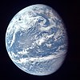

ocean

Definition: The ocean (also the sea or the world ocean) is the body of salt water that covers approximately 70.8% of the Earth and contains 97% of Earth's water. An ocean can also refer to any of the large bodies of water into which the world ocean is conventionally divided. Separate names are used to identify five different areas of the ocean: Pacific (the largest), Atlantic, Indian, Southern, and Arctic (the smallest). Seawater covers approximately 361,000,000 km2 (139,000,000 sq mi) of the planet. The ocean is the principal component of Earth's hydrosphere, and therefore integral to life on Earth. Acting as a huge heat reservoir, the ocean influences climate and weather patterns, the carbon cycle, and the water cycle.
Source: Wikipedia
Wikipedia Page (Something wrong with this association? Let us know.)
Wikidata Page (Something wrong with this association? Let us know.)
Occurs in: